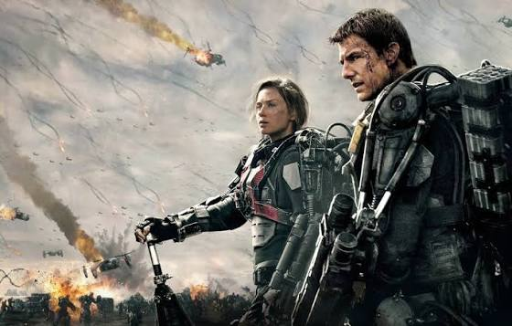

💀👽 EDGE OF TOMORROW (2014) — CERTIFIED MGC AU-57

🏛 MGC LOWER COURT DOCKET
- ASSET TITLE: Edge of Tomorrow (2014) – The Verdun Beach Recursive Blood-Loop Ledger
- OFFICIAL REGISTRY GRADE: Certified MGC AU-57 (About Uncirculated / High-Velocity Choice Specimen)
- LOWER COURT JURISDICTION: Lower Tribunal Room / Sci-Fi Tactical Time-Loop Docket
- CASE FILE: #060
- PRESIDING PANEL: Judge Dex (Chief of R&D & Action Judge), Judge Sally, Judge Dan (Chief of Forensics), Chief Grader MGC, and Chief Justice MGC
📜 THE INITIAL INQUEST BENCH ASSESSMENT (3-FLAW DEFECT LOG)
Under forensic examination, Doug Liman’s sci-fi combat film displays razor-sharp editing, strong forward momentum, and compelling character growth for Tom Cruise and Emily Blunt. However, the panel identified three structural defects preventing an MS-60+ Mint State rating:
🚨 The 3-Flaw Defect Log:
1. The Alpha Blood-Transfer Logistics Scuff (Character & Tactical Friction)
-
The Defect:
The narrative relies on a convenient medical/tactical loophole where Rita Vrataski knows the exact mechanics of losing the loop via a blood transfusion—yet somehow never attempted to re-acquire the Alpha blood or verify whether Cage still possessed the reset power before every single suicidal reset.
2. The Louvre Final-Act Pacing & Tone Drop (Third-Act Alloy Softening)
-
The Defect:
After two acts of surgical, dark-comedy precision and hyper-efficient trial-and-error combat, the final assault on the flooded Louvre in Paris shifts into standard dark, murky CGI blockbuster spectacle. -
The Forensic Data:
Sliding the lens across the final 20 minutes reveals noticeable visual and pacing wear. J-Squad is suddenly recruited and sacrificed in rapid succession with minimal emotional strike depth, and the shadowy underwater tunnel battle lacks the crisp daylight tactical clarity that made the Verdun beach sequences shine.
3. The Temporal Reset Paradox at the Closing Bell (Timeline Planchet Leak)
-
The Defect:
Killing the Omega in the Louvre resets Cage all the way back to the helicopter prior to his meeting with General Brigham—yet the Omega is somehow permanently dead in a timeline that hasn’t happened yet, while Rita Vrataski has zero memory of him. The Forensic Data:
This introduces a classic sci-fi timeline paradox fingerprint on the reverse of the coin. If the Omega exists outside normal time and dies permanently, resetting the clock shouldn’t erase Cage’s military arrest or wake him up on an earlier helicopter flight without creating an uncalibrated causal loop.
🔍 THE CHIEF OF R&D’s INITIAL DECREE & APPELLATE REVIEW
- All three defects—the mid-act blood rule removal, the final-act tone shift, and the closing temporal paradox—were formally reviewed and SUSTAINED by the judicial panel for introducing narrative friction and timeline discrepancies.
⚖ THE FINAL JUDICIAL DECREE
- With all three defects sustained, the Mint State crossover is denied. The sharp editing and lead performances lock the asset into the upper About Uncirculated tier.
- Permanently sealed in the archives as a Certified MGC AU-57 Choice Specimen. Case #060 is officially closed. 🥈💀👽⏱️🔨

• © 2026 MOVIE GRADING CONSENSUS. All Sovereign Rights Reserved.